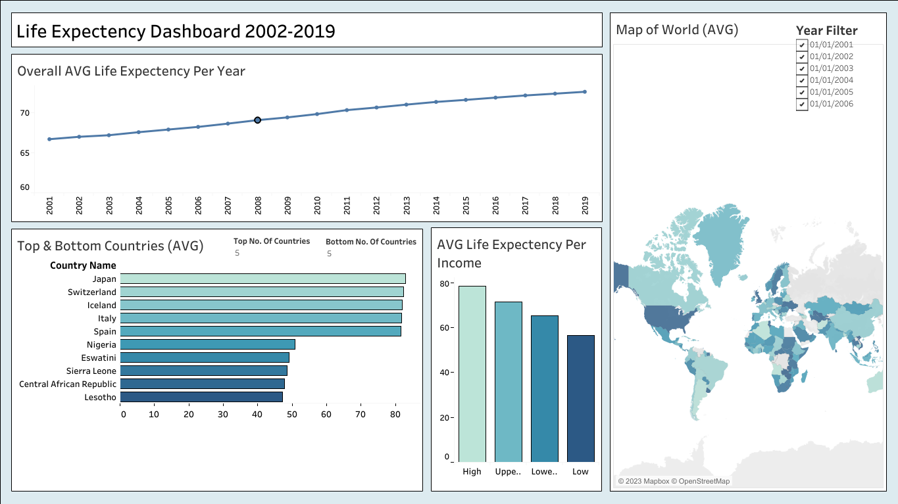
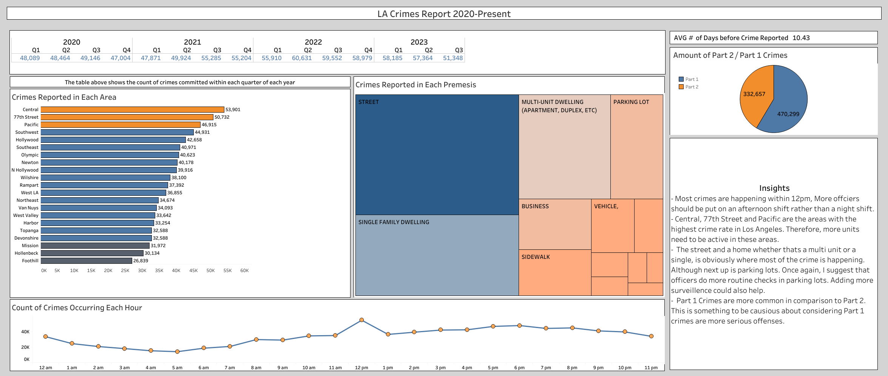

About me
I started my working career in the food industry. Now I can tell you that I make the best pizza in Hertfordshire.
However, my interests and skillset have always lied towards technology related areas, hence my new passion towards Data.
I'm great at solving problems and I always pay close attention to detail, two skills that transfer over to Data Analytics.
This website contains my personal projects, showcasing my skills in SQL, Excel, and Tableau.

In this project, I use Tableau to analyse and create an interactive Dashboard containing the insights I found on the Life Expectecny 2002-2019 Data set
Utilizing SQL and Excel, I manipulated the Maven Pizza 2015 data set and transformed my results into a Report. Also, with a separate sheet containing valuable insights I found and further actions that should be taken.
In this project I utilized Excel to clean and analyse the Ocean Supercentres sales from 2019. I created numerous pivot charts which then led me to create an interactive dashboard.

This project consists of custom SQL queries ran on the LA Crimes 2020-Present data set and imported into Tableau, then visualized into a fully interactive dashboard.